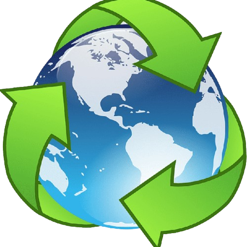

Introdução
Esse site foi projetado com o objetivo de oferecer um suporte básico a população, como um projeto estudantil, realizado por estudantes do IFNMG.
Aqui, como principal objetivo há de principalmente oferecer informações como aplicações práticas
recursos como pontos de coleta de lixo e itinerário dos caminhões de coleta de resíduos sólidos.
(Popularmente onhecidos como caçamba de lixo)
Imagem obtida de https://www.minasgerais.com.br/pt/atracoes/teofilo-otoni/cachoeira-de-pedra-dagua
Importância
A conscientização sobre o descarte correto de resíduos é essencial para promover cidades mais limpas, saudáveis e sustentáveis. Cada dia mais as pessoas esquecem ou perdem o interesse pelo cuidado ao meio ambiente, perdendo o ponto principal, ele é onde nós vivemos.A importancia desse cuidado vai mais fundo do que apenas não jogar lixo no chão.
A cada ano, estima-se que 33 milhões de toneladas de resíduos sólidos urbanos são descartadas de forma inadequada no Brasil, o que representa cerca de 40,5% de todo o lixo gerado no país.
Apesar dos avanços na legislação e nas campanhas de conscientização, apenas 8,3% do lixo urbano é reciclado corretamente.
Isso significa que a maior parte dos resíduos com potencial de reaproveitamento acaba sendo enterrada ou descartada sem tratamento adequado.
A maioria dos resíduos é destinada a aterros sanitários ou lixões,
Onde, apesar de que os lixões foram oficialmente proibidos em agosto de 2024 pela Política Nacional de Resíduos Sólidos (Lei 12.305/2010), mais de 1.500 municípios ainda mantinham lixões ativos em 2025, desrespeitando o prazo legal, tornando assim, nosso dever o cuidado com o ambiente.
O impacto do descarte inadequado vai muito além da poluição ambiental. Ele contamina o solo e os recursos hídricos, aumenta a emissão de gases de efeito estufa, compromete a saúde pública, gera perda econômica ao enterrar materiais recicláveis e sobrecarrega os sistemas de coleta e tratamento de resíduos.
https://g1.globo.com/meio-ambiente/cop-30/noticia/2025/11/03/por-que-o-brasil-enterra-tanto-lixo-reciclavel.ghtml // https://noticias.r7.com/brasilia/descarte-irregular-de-residuos-atinge-77-milhoes-de-brasileiros-e-custa-us-1-bi-por-ano-diz-estudo-26082025
https://www.uol.com.br/ecoa/noticias/deutsche-welle/2025/01/17/como-o-brasil-poderia-melhorar-a-destinacao-do-seu-lixo.htm // https://www12.senado.leg.br/noticias/materias/2024/08/02/na-data-limite-para-fim-de-lixoes-destino-dos-residuos-ainda-desafia-municipios
https://g1.globo.com/jornal-nacional/noticia/2024/08/02/termina-prazo-para-encerramento-total-dos-lixoes-em-municipios-problema-nao-e-resolvido.ghtml
Sobre associações de coleta
As associações de catadores organizam trabalhadores informais que coletam, triagem e comercializam materiais recicláveis, funcionando como pontos centrais da cadeia da reciclagem:
recebem materiais da população, realizam separação por tipo e qualidade, compactam ou beneficiam quando possível e vendem para recicladores industriais ou sucateiros.
Muitas atuam também como ponte entre catadores e políticas públicas, programas sociais e projetos de capacitação, além de promoverem educação ambiental em escolas e comunidades.
Ambientalmente, essas associações reduzem o volume de resíduos enviados a aterros e lixões, aumentam a recuperação de materiais com valor reciclável (papel, plástico, metal, vidro) e ajudam a diminuir as emissões de gases de efeito estufa ao evitar a extração e produção de matéria-prima virgem.
Contribuem diretamente para a economia circular local.
No aspecto social e econômico, as associações geram renda e possibilitam a formalização do trabalho para pessoas em situação de vulnerabilidade.
Melhoram condições de trabalho quando recebem infraestrutura e equipamentos, e fortalecem inclusão social e cidadania por meio da organização coletiva e do acesso a mercados e programas públicos.
As atividades comuns incluem recebimento e triagem de recicláveis trazidos pela população, compra de materiais de coletores autônomos, comercialização para recicladores e indústrias, pesagem e separação por qualidade, além de ações educativas e capacitação em gestão e segurança no trabalho.
Os principais desafios enfrentados por essas organizações são a infraestrutura insuficiente (galpões, balanças, equipamentos de beneficiamento), a precariedade de renda e a informalidade persistente, a flutuação de preços dos materiais recicláveis que compromete a sustentabilidade financeira e a falta de integração e apoio consistente das políticas públicas locais.
As associações agregam valor às políticas públicas e às empresas ao reduzir custos com destinação inadequada, viabilizar parcerias de logística reversa e programas de coleta seletiva, fornecer dados locais sobre geração e composição de resíduos e criar oportunidades para que empresas cumpram metas de responsabilidade socioambiental.
A população pode apoiar separando corretamente os recicláveis, doando materiais limpos e secos, participando e divulgando campanhas de coleta, preferindo produtos feitos com material reciclado e apoiando iniciativas de formalização, capacitação e infraestrutura por meio de doações, parcerias ou voluntariado.
Associações de catadores são atores-chave para a sustentabilidade urbana: transformam resíduo em recurso, geram trabalho e renda e ajudam a construir cidades mais limpas e mais justas.
Para conhecer informações mais profundas sobre as associações que agem atualmente em teófilo Otoni-MG, confira nossa aba de pontos de coleta